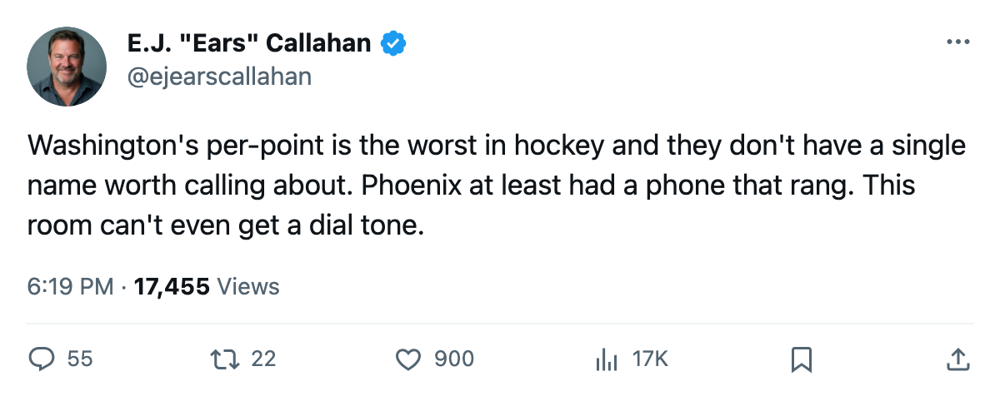
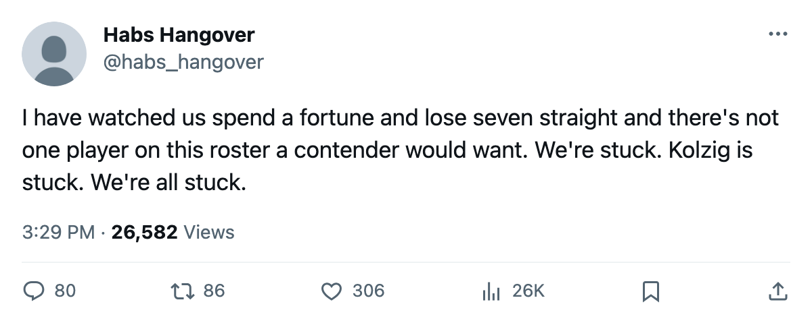

Payroll Dumps: Washington Pays $2.48M a Point. There Is Nothing to Sell.
The league's worst per-point rate, a 7-game skid, a goaltender at 74 morale. And not one expiring name the market would answer.
 E.J. "Ears" CallahanInsider · The Hot Stove
E.J. "Ears" CallahanInsider · The Hot Stove
The piece
Washington sits at $2.48M per point. No club in the league spends more for a single point in the standings. The  Washington Capitals roster costs $57.05M, they hold 23 points through 32 games, and they are seven losses in a row. The trade deadline, what the calendar has as the trade deadline, is 89 days away. Nobody has called.
Washington Capitals roster costs $57.05M, they hold 23 points through 32 games, and they are seven losses in a row. The trade deadline, what the calendar has as the trade deadline, is 89 days away. Nobody has called.
That is a different silence than Phoenix's. Phoenix had names the market wanted and the market still stayed quiet. Washington doesn't have names the market wants. Their payroll is the 7th-highest in the league and not one player on it appears in the Bureau's top 30 contract-year class. The closest WSH name to a rental-grade deal is Leo Lopatin67 [1001064], a 61-overall backup with 1 year remaining at $0.81M. Nobody trades for a 61.
The money is locked in.  Olaf Kolzig83 earns $6.20M with 2 years left. He has played 25 games, averages 65.7 minutes a night, and sits at 74 morale, tied for the 4th-lowest in the league. He is not on the injured list. He is simply unhappy and expensive with two more years on the deal.
Olaf Kolzig83 earns $6.20M with 2 years left. He has played 25 games, averages 65.7 minutes a night, and sits at 74 morale, tied for the 4th-lowest in the league. He is not on the injured list. He is simply unhappy and expensive with two more years on the deal.
Jussi Vertala67 is the only Washington name on the injured list who carries any salary weight: a 67-overall left wing at $0.81M with 1 year left, out through 2005-12-27 with a rib. That is not a trade piece. That is a healthy scratch who happened to get hurt.
WSH's previous playoff run reached 3 rounds last spring. They are 7-18-5 now, 23 points through 32 games. The regression is the sharpest in the league among clubs that made it past the second round.
Chicago faces a similar per-point problem at $2.12M, but the  Chicago Blackhawks room holds
Chicago Blackhawks room holds  Mark Bell80, an 84-overall left wing on an expiring $0.90M. The Bureau has Bell at 91 morale. He is not miserable, but he is the kind of name a contender's GM circulates. Chicago can call somebody. Washington cannot.
Mark Bell80, an 84-overall left wing on an expiring $0.90M. The Bureau has Bell at 91 morale. He is not miserable, but he is the kind of name a contender's GM circulates. Chicago can call somebody. Washington cannot.
The league's trade window this season has produced 2 confirmed deals. Neither involved Washington, and neither involved a club with less than 26 points to offer. Washington sits below that threshold, holds no first-round pick the sheet flags as available to another club, and carries a goaltender with 2 years and $6.20M left on a deal nobody will absorb for a draft pick.
$2.48M a point, 89 days to find a buyer, no inventory to show the room. That's the one that doesn't fix itself.

